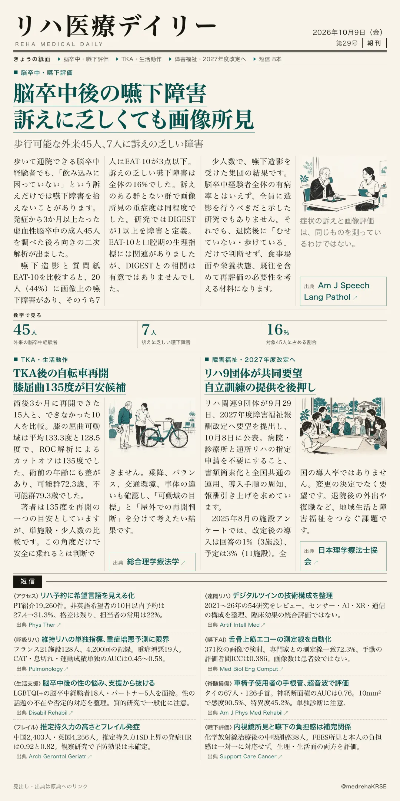
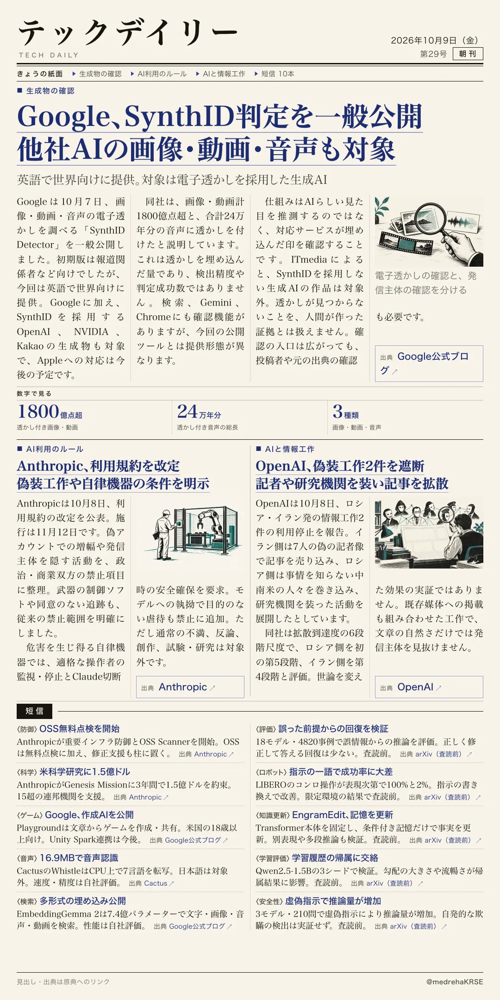

リハ医療デイリー
脳卒中後の嚥下障害 訴えに乏しくても画像所見
歩行可能な外来45人、7人に訴えの乏しい障害
歩いて通院できる脳卒中経験者でも、「飲み込みに困っていない」という訴えだけでは嚥下障害を拾えないことがあります。発症から3か月以上たった虚血性脳卒中の成人45人を調べた後ろ向きの二次解析が出ました。

テックデイリー
Google、SynthID判定を一般公開 他社AIの画像・動画・音声も対象
英語で世界向けに提供。対象は電子透かしを採用した生成AI
10月7日、電子透かしを検出するSynthID Detectorを一般公開。
